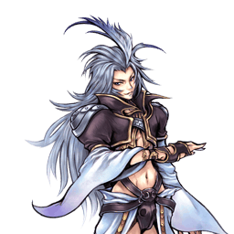

Final Fantasy IX
Kuja
Mage dont les enchaînements changent selon la distance, assist d'élite
Position dans la méta
Tier A 9ᵉ sur 30 — tier list tournoi 2017 de dissidia.wiki (moitié valeurs de matchups, moitié avis de joueurs experts).
Kuja est classé 9e (tier A) de la tier list 2017. L'overview du wiki n'étant pas rédigé, les sources ne fournissent aucun commentaire qualitatif sur ce classement côté joueur.
Vue d'ensemble
Stats & vitesses
| Nom | Kuja (クジャ) |
|---|---|
| Jeu d'origine | Final Fantasy IX |
| ATK de base (LV100) | 109 (Low) |
| DEF de base (LV100) | 111 (Average) |
| Vitesse de course | 7 (Average) |
| Vitesse de dash | 77 (Average / Good) |
| Vitesse de chute | 89 (Below Average) |
| Chute après esquive | 41 (Below Average) |
| BRV la plus rapide | 15F (Burst Energy) |
| HP la plus rapide | 33F (Force Symphony) |
| HP en 1 coup | Yes (Force Symphony) |
| Command block | No |
| Armes | Daggers, Rods, Staves, Poles |
| Armures | Bangles, Hats, Hairpins, Clothing, Robes, Headbands, Chestplates |
| Armes exclusives | Punisher, Whale Whisker, Terra's Legacy |
| Camp | Chaos |
| Doubleur (JP) | Akira Ishida |
| Doubleur (ENG) | JD Cullum |
Point or : ce personnage · petits points : le reste du cast · trait violet : moyenne. Valeurs du wiki, plus bas = plus rapide ; le rang à droite se lit directement (1ᵉʳ = le plus rapide).
Coups
Barre plus courte = coup plus rapide. Startup en frames (60 i/s, données dissidia.wiki), priorité indiquée après la valeur. Les coups marqués ★ sont les plus rapides du kit — ce sont en général vos meilleurs outils de punish et de pression.
Braveries
Liste
All of Kuja's bravery attacks have a ground an aerial version. Attack data is shared between both versions. Barring Remote Flare and Ring Holy, Kuja's bravery attacks have different followups depending on how close he is to his opponent.
Burst Energy Ranged Low
Ouvre l'attaque avec Flare à courte portée ; la distance avec l'adversaire modifie l'enchaînement (variantes Close et Far aux dégâts, priorités et effets distincts : Wall Rush de près, Chase de loin). C'est la bravery la plus rapide de Kuja (15F). Comme pour ses autres braveries à variantes, le nombre de coups dépend du positionnement et peut monter jusqu'à 16 sur un adversaire acculé dans un coin.
| Close | Far | |
|---|---|---|
| Dégâts de base | 50 (15, 5 x 4, 15) | 35 (15, 1 x 10, 10) |
| Startup | 15F | 15F |
| Type | Magical | Magical |
| Priorité | Ranged Low | Ranged Low (start), Melee Low (followup?) |
| EX Force | 36 | ~90 |
| Effets | Wall Rush | Chase |
| Cancels | Dodge | Dodge |
| CP (maîtrisé) | 30 (15) |
Snatch Blow Melee Low (start), Ranged Low (follow-up?)
Lance l'attaque avec Holy à moyenne portée ; la distance modifie l'enchaînement (Wall Rush de près, Chase de loin). Startup de 35F. Toutes les braveries de Kuja existent en version sol et aérienne avec des données partagées.
| Close | Far | |
|---|---|---|
| Dégâts de base | 32 (8, 1 x 4, 2 x 4, 12) | 47 (8, 1 x 4, 2 x 10, 15) |
| Startup | 35F | 35F |
| Type | Magical | Magical |
| Priorité | Melee Low (start), Ranged Low (follow-up?) | Melee Low |
| EX Force | 36 | ~90 |
| Effets | Wall Rush | Chase |
| Cancels | Dodge | Dodge |
| CP (maîtrisé) | 30 (15) |
Ring Holy Ranged Low
Projectiles à tête chercheuse tirés par trois à longue portée, orientables au stick analogique. C'est, avec Remote Flare, l'une des deux braveries de Kuja sans variante de distance.
| Dégâts de base | each 5 |
|---|---|
| Startup | 33F |
| Type | Magical |
| Priorité | Ranged Low |
| EX Force | 0 |
| CP (maîtrisé) | 30 (15) |
Strike Energy Melee Low
Enchaînement lancé depuis Holy à courte portée ; la distance modifie la suite (Chase de près, Wall Rush de loin). Startup de 17F, l'une de ses braveries les plus rapides.
| Close | Far | |
|---|---|---|
| Dégâts de base | 50 (4 x 4, 2 x 7, 20) | 35 (4 x 4, 1 x 7, 13) |
| Startup | 17F | 17F |
| Type | Magical | Magical |
| Priorité | Melee Low | Melee Low (start), Ranged Low (follow-up?) |
| EX Force | ~90 | 30 |
| Effets | Chase | Wall Rush |
| Cancels | Dodge | Dodge |
Snatch Shot Ranged Low
Enchaînement lancé avec Flare à moyenne portée ; la distance modifie la suite (Chase de près, Wall Rush de loin). Startup de 31F, priorité Ranged Low sur les deux variantes.
| Close | Far | |
|---|---|---|
| Dégâts de base | 35 (7, 8, 1 x 7, 13) | 50 (7, 8, 9, 11, 15) |
| Startup | 31F | 31F |
| Type | Magical | Magical |
| Priorité | Ranged Low | Ranged Low |
| EX Force | ~90 | 30 |
| Effets | Chase | Wall Rush |
| Cancels | Dodge | Dodge |
| CP (maîtrisé) | 30 (15) |
Remote Flare Special
Encercle l'adversaire de déflagrations à longue portée, orientables au stick analogique, avec Wall Rush et Absorb ; priorité Special. Startup lent (63F).
| Dégâts de base | each 5 |
|---|---|
| Startup | 63F |
| Type | Magical |
| Priorité | Special |
| EX Force | 0 |
| Effets | Wall Rush, Absorb |
| CP (maîtrisé) | 30 (15) |
Attaques HP
Liste
All of Kuja's HP attacks have a ground and an aerial version, except Force Symphony. Force Symphony is only available while midair.
Flare Star Ranged High
Deux grosses déflagrations déclenchées à courte portée, orientables au stick analogique, avec Wall Rush et priorité Ranged High.
| Dégâts de base | 10, 1 x 5 (15) |
|---|---|
| Startup | 39F |
| Type | Magical |
| Priorité | Ranged High |
| EX Force | 30 |
| Effets | Wall Rush |
| CP (maîtrisé) | 30 (15) |
Seraphic Star Ranged High
Sort lancé à moyenne portée provoquant une énorme explosion d'énergie, avec Absorb et une forte génération d'EX (87).
| Dégâts de base | 1 x 9 (9) |
|---|---|
| Startup | 49F |
| Type | Magical |
| Priorité | Ranged High |
| EX Force | 87 |
| Effets | Absorb |
| CP (maîtrisé) | 30 (15) |
Ultima Ranged High
Pluie d'innombrables projectiles magiques à longue portée, orientable au stick analogique ; 23 touches potentielles en Ranged High.
| Dégâts de base | 1 x 23 (23) |
|---|---|
| Startup | 33F |
| Type | Magical |
| Priorité | Ranged High |
| EX Force | 30 |
| CP (maîtrisé) | 30 (15) |
Force Symphony Ranged High
Pluie de magie disponible uniquement en l'air : maintenir le bouton pour prolonger le tir, orientable au stick analogique. Après le premier orbe, un orbe supplémentaire apparaît toutes les 0,5 secondes, jusqu'à 6 au maximum. C'est le HP le plus rapide de Kuja (33F) et son HP en un coup.
| Startup | 33F |
|---|---|
| Type | Magical |
| Priorité | Ranged High |
| EX Force | 30 |
| CP (maîtrisé) | 30 (15) |
EX Mode: Trance! & EX Burst
L'EX Mode de Kuja, « Trance! », confère Regen, Critical Boost, Hyper Glide et Auto Magic. Hyper Glide, activé en maintenant X en l'air, maintient l'altitude plus longtemps que le glide normal.
Auto Magic, actif en permanence en EX Mode, lance automatiquement Holy et Flare quand Kuja saute, tombe, touche le sol ou plane : Holy en saut/chute et en glide (orbes lumineux, Melee Low, 1 de dégât de base), Flare pendant les sauts aériens (orbes rouge sombre, Ranged Low, 1) et à l'atterrissage (explosion, Ranged Low, 3).
EX Burst : Final Requiem est une chaîne d'attaques qui gagne en puissance à chaque coup : marteler Cercle augmente la force de chaque frappe (7 de dégâts de base initiaux, 100 au total, type Magical).
Mécanique unique
Plan de jeu & techniques avancées
Techniques universelles (blodge, dash feint, lock off, dodge punishment) : voir la page Techniques & glitches.
Matchups
Vidéos de matchs : Replay Theater — matchs de Kuja.
Builds
La section builds du wiki n'est pas rédigée : elle ne contient que des tableaux bruts. Un seul build complet y figure, construit autour de l'effet spécial Seal of Lufenia : Terra's Legacy en arme, pièces Lufenian (Lufenian Dirk, Lufenian Headband, Lufenian Vest), assist Zidane, invocation Rubicante, et des accessoires mêlant Hyper Ring, Earring, Battle Hammer, Summon Unused, Pre-EX Revenge, trois White Drop, White Gem et Glutton, pour 10626 HP, 877 BRV, 178 ATK et 184 DEF à 450 CP. Le wiki précise que le coût total en points de capacité suppose l'utilisation de l'Equip Glitch (abilités « Gear »).
| Stats | |
|---|---|
| HP | 10626 |
| CP | 450 |
| BRV | 877 |
| ATK | 178 |
| DEF | 184 |
| LUK | 60 |
| Equipment | |
|---|---|
| Assist | Zidane |
| Weapon | Terra's Legacy |
| Hand | Lufenian Dirk |
| Head | Lufenian Headband |
| Body | Lufenian Vest |
| Accessory 1 | Hyper Ring |
| Accessory 2 | Earring |
| Accessory 3 | Battle Hammer |
| Accessory 4 | Summon Unused |
| Accessory 5 | Pre-EX Revenge |
| Accessory 6 | White Drop |
| Accessory 7 | White Drop |
| Accessory 8 | White Drop |
| Accessory 9 | White Gem |
| Accessory 10 | Glutton |
| Summon | Rubicante |
| Bravery attacks | |
|---|---|
| Ground | Aerial |
| HP attacks | |
| Ground | Aerial |
| Stats |
|---|
| Equipment |
|---|
| Bravery attacks | |
|---|---|
| Ground | Aerial |
| HP attacks | |
| Ground | Aerial |
Aucun texte explicatif n'accompagne ce build (pas de philosophie rédigée, pas de liste d'attaques recommandées), et le second onglet de build est entièrement vide dans les données.
Synergies d'assist
Kuja en tant qu'assist
Kuja est l'un des tout meilleurs assists du jeu — classé Top tier de la tier list assist (Muggshotter) — et il l'est resté durant toute la vie compétitive du titre. Ses braveries tiennent bien en combo, avec un bon hit stun et des finishers Assist Chase, ce qui le fait synergiser fondamentalement avec la plupart des personnages. Les dégâts de base de ses braveries sont excellents (ce qui vaut aussi pour la déplétion de jauge EX sur hit) et il whiff punit efficacement les attaques aériennes. Il est si polyvalent qu'il peut servir de point de départ pour apprendre le système d'assist.
Ses défauts : une sécurité limitée face aux deux niveaux d'Assist Change — ses braveries en priorité mêlée perdent contre le LV2 Change, et ses animations de durée moyenne à longue l'exposent aux tentatives d'Assist Lock. Le knockback vers le haut de ses coups limite aussi les combos au sol et les opportunités de setup : les joueurs cherchant à optimiser ce registre ne le choisiront pas toujours. À l'inverse, pour Kefka et Ultimecia, Kuja est l'un des seuls assists réellement viables en compétition, si ce n'est le seul.
En BRV assist : Snatch Blow (sol, 35F) est un multi-hit qui maintient l'adversaire en place avant de l'envoyer en l'air ; sa longue durée sur hit est idéale pour les coups de remplissage (Bardiche de Garland, Firaga de Cloud, HP Wall Rush mono-coup comme Straightarrow de Firion ou Aerial Circle de Squall). Lent au démarrage, il doit être appelé tôt et whiff punit mal, mais le coup de retour possède une hitbox qui peut toucher dans le dos. Kuja restant assez statique, il faut le protéger contre les échappées en LV1 Assist Change. Strike Energy (air, 17F) est la valeur sûre : rapide, bonne allonge latérale, léger tracking vertical, finisher Assist Chase vers le haut, 50 de dégâts de base et un hit stun généreux qui facilite les suites en projectile ou en HP — un excellent whiff punisher et extenseur de combo, même si sa hitbox touche mal très bas.
En HP assist : Flare Star (sol, Ranged High) sert surtout de démarreur de combo assist sûr contre le LV2 Assist Change et de punish d'esquive au sol difficile à contester, précieux quand les deux joueurs sont bloqués à deux barres pleines, notamment à killing bravery. Force Symphony (air, Ranged High) tire des projectiles en ligne du haut vers le bas : checkmate situationnel en séquence de Chase et très bon outil de désengagement en scramble, chaque projectile étant un HP mono-coup à petite zone d'effet avec Assist Chase. Au global, Kuja assist offre puissance et flexibilité là où un assist en a le plus besoin : conversions, punish, interruptions et une relative sécurité contre le LV2 Assist Change.
Assists recommandées
- Aerith — Citée dans la section Synergies du wiki parmi les assists avec lesquels Kuja fonctionne bien, sans détail supplémentaire.
- Kefka — Cité dans la section Synergies du wiki, sans détail supplémentaire.
- Zidane — Cité dans la section Synergies du wiki ; c'est aussi l'assist retenu par le seul build documenté de Kuja.
Tech communautaire
Sources
- https://dissidia.wiki/Kuja_(Dissidia_012)
- https://dissidia.wiki/Tier_List_(Dissidia_012)
- https://dissidia.wiki/Tier_List_(Assist)
Limites connues
- Overview du wiki non rédigé : aucune synthèse d'archétype, aucune liste de forces/faiblesses, aucun historique compétitif côté joueur — d'où les champs overview, strengths et weaknesses à null.
- Aucun gameplan joueur documenté (overview vide, section combos vide, notes de coups limitées aux descriptions du jeu) — gameplan à null.
- Page matchups à l'état de stub, sans contenu exploitable dans l'overview — matchups à null.
- Pas de mécanique unique documentée — uniqueMechanics à null.
- Aucune technique avancée spécifique à Kuja joueur dans les sources — advancedTech à null.
- Notes de coups joueur limitées aux descriptions officielles et aux intros de sections (variantes de distance, plafond de 16 coups en coin) : aucune analyse d'usage compétitif coup par coup.
- Section builds sans texte : un seul build en tableaux bruts, second onglet vide, aucune recommandation d'attaques.
- Aucune référence communautaire listée ; champ assist gain des coups non renseigné.